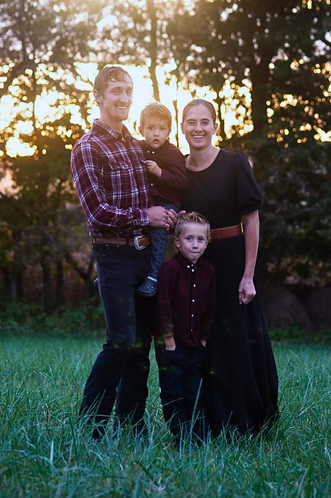
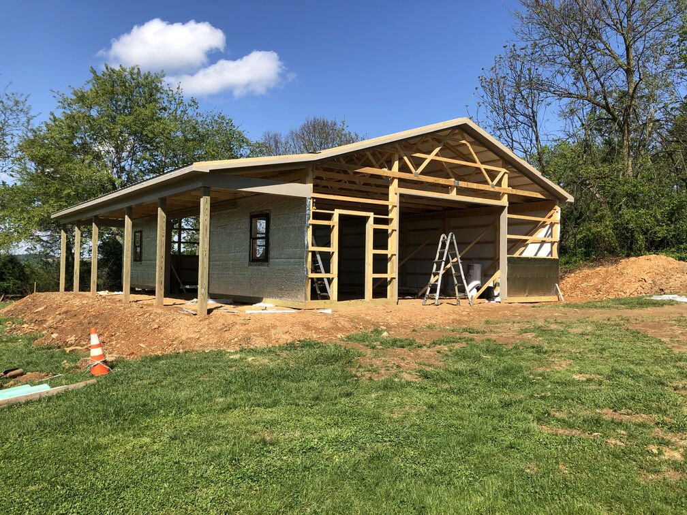
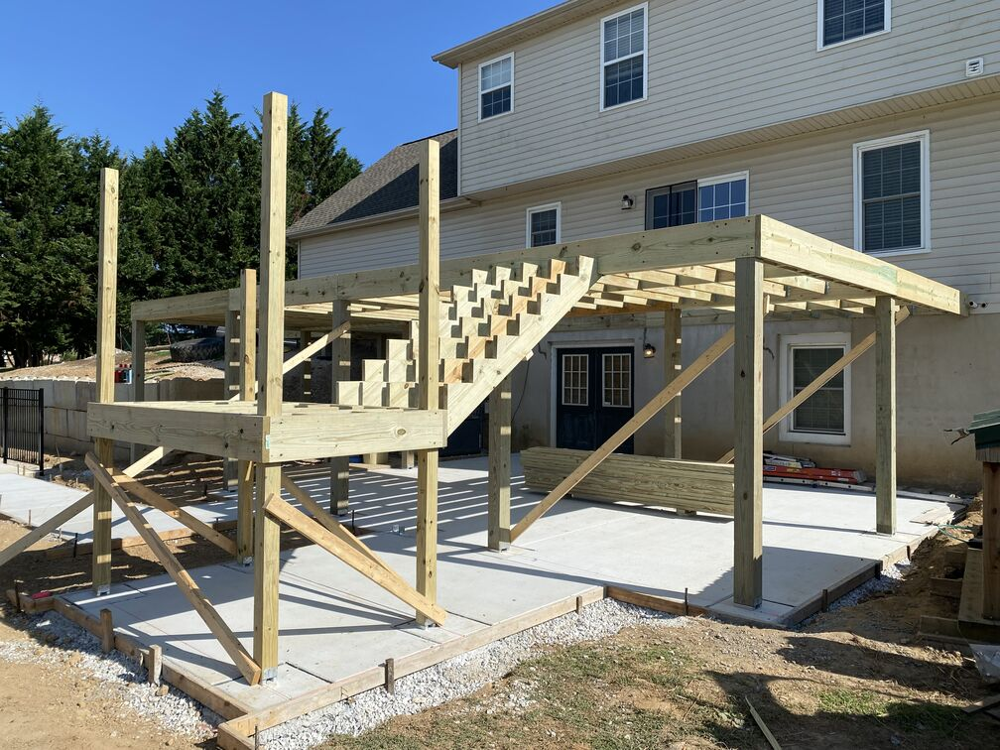

Some people find their way into construction. For Andrew, the owner of South Branch Trades, it was just life growing up. Raised on a working Amish dairy farm in Pennsylvania, there was always something that needed to be built, repaired, or improved. That constant hands-on work is where a real love for designing and building took root — not in a classroom, but out in the field, doing it.
That foundation is what South Branch Trades is built on. What started as a small operation in York County has grown into one of South-Central Pa's most trusted names in custom construction — not by chasing volume, but by doing honest work at a fair price and standing behind every project. Today, we serve homeowners across the region with a full crew of skilled craftsmen and a large portfolio of completed projects. But the same principle that's driven this company from day one hasn't changed: treat every home like it's your own, communicate straight, and never cut corners on the craft.
We've built our reputation one project at a time, working closely with homeowners to transform their visions into reality. From custom decks that extend living spaces outdoors to garage buildings that add valuable functionality, we approach every project with the same commitment to quality.

Our Mission & Values
We're guided by core principles that shape every decision we make and every project we undertake.
Quality First
We never compromise on materials or workmanship. Every project is built to last and exceed expectations.
Customer Focus
Your vision drives our work. We listen carefully, communicate clearly, and deliver exactly what you need.
Local Commitment
As a locally-owned business, we're invested in our community and the relationships we build.
Expert Craftsmanship
Our team brings decades of combined experience and a passion for precision to every job.
How We Work
From initial consultation to final walkthrough, we've refined our process to ensure a smooth, stress-free experience.
01
Initial Consultation
We meet at your property to discuss your vision, assess the site, and answer all your questions.
02
Design & Quote
We create a detailed plan and provide a transparent, comprehensive quote with no hidden fees.
03
Expert Construction
Our skilled team brings your project to life with precision craftsmanship and attention to detail.
04
Final Walkthrough
We ensure everything meets your expectations and provide guidance on maintenance and care.
Proudly serving York County and surrounding areas in South-Central Pennsylvania.
Don't see your area? We often work throughout South-Central Pennsylvania. Contact us to discuss your project location.
Our Commitment To You
When you choose South Branch Trades, you're not just hiring a contractor — you're partnering with a team that genuinely cares about your home and your satisfaction.
On-time project completionClean, organized work sitesRespectful, professional crewFair and transparent pricingSuperior craftsmanshipOngoing support after completion


Ready to Start Your Project?
Let's discuss your vision and create something amazing together. Get your free estimate today.